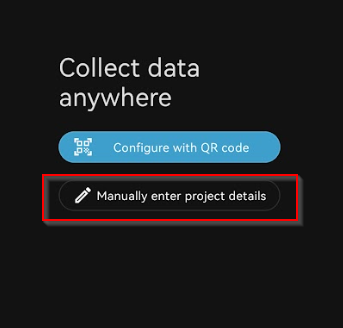
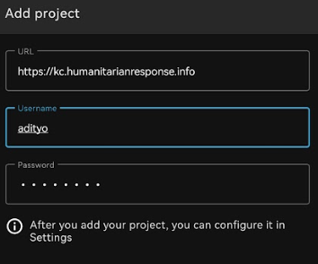
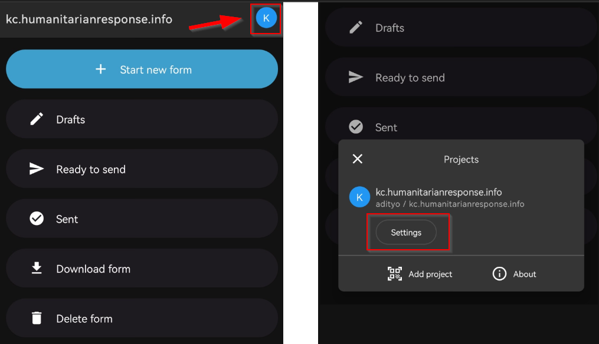
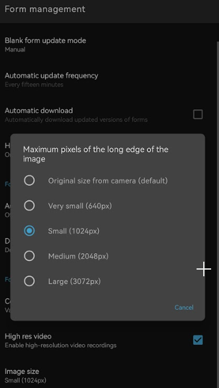
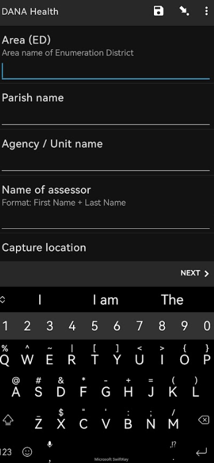
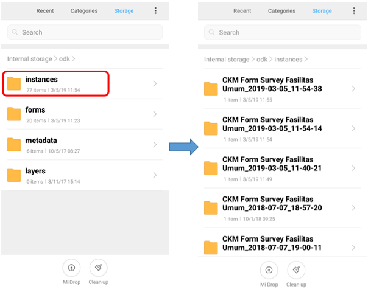
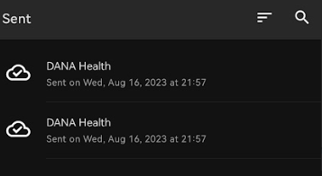
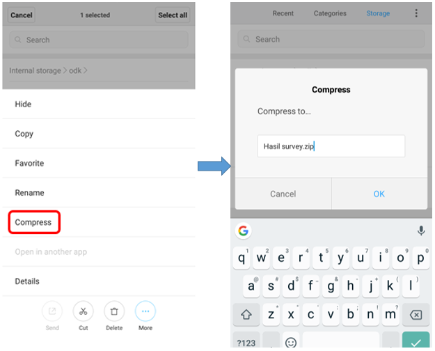

4.3 Utilisation d_ODK Collect
Objectifs du cours
À la fin de cette section, vous devriez être en mesure de :
- Comprendre pour configurer ODK Collect pour la première fois.
- Être capable de faire fonctionner ODK Collect pour des activités de collecte de données sur le terrain.
Activités d’apprentissage
Open Data Kit Collect (ODK Collect) est une application de collecte de données sur Android. ODK Collect peut remplacer le formulaire d’enquête papier par un formulaire numérique. Par conséquent, cette application facilitera les activités de cartographie et de collecte de données sur le terrain et permettra également de sauvegarder les informations relatives à la localisation et aux photos en une seule fois. Vous pouvez télécharger ODK Collect dans le Google Playstore pour débuter cette section.
Configuration initiale de ODK Collect
1. Définir l’URL du serveur
Lorsque vous ouvrez ODK pour la première fois, vous serez invité à définir le serveur URL pour votre application ODK. Il peut s’agir d’un serveur URL qui pointe vers votre serveur ODK Central, Kobotoolbox ou le Gestionnaire de Tâche pour la cartographie de terrain.
Dans ODK, vous pouvez définir l’URL du serveur de deux manières, en utilisant le QR Code ou en définissant l’URL du serveur manuellement. Nous allons expliquer comment configurer l’URL en utilisant le QR Code ou en entrant manuellement dans les détails du projet.
A. Utilisation du code QR pour mettre en place un projet
- Sélectionner Configurer avec le Code QR
- Cliquez sur le coin supérieur droit pour ouvrir le bouton Importer le code QR. Cela importera le code QR que vous avez téléchargé manuellement depuis votre serveur ODK Central, Kobo Toolbox ou FMTM.

- Trouvez des images de codes QR sur votre téléphone et sélectionnez l’image QR pour lancer l’ouverture du projet

B. Saisir manuellement les détails du projet
- Sélectionnez Saisir manuellement les détails du projet

- Ajoutez le projet en saisissant l’URL du serveur (ODK Central, Kobo Toolbox ou FMTM URL), le nom d’utilisateur et le mot de passe.

- Cliquez sur Ajouter si toutes les informations sont déjà saisies.
2. Définir la taille de l’image (Optionnel)
Outre le point de localisation, vous pouvez également prendre une photo à titre d’information supplémentaire. Si vous recueillez des images dans le cadre de vos enquêtes de collecte de données, vous pouvez régler la résolution de l’image comme vous le souhaitez. Cependant, la résolution de l’image affectera également la quantité de mémoire de votre téléphone ou le fichier qui sera téléchargé sur le serveur ultérieurement. Il est recommandé de choisir la plus petite résolution de l’image lors de la configuration initiale. Vous pouvez suivre cette étape :
- Cliquez sur le coin supérieur droit de la page d’accueil de votre projet
- Cliquez sur l’onglet Setting

- Dans la page Paramètres, allez dans Gestion des formulaires

- Dans la gestion du formulaire, recherchez la taille de l’image et réduisez-la (par défaut, la taille de l’image est celle du téléphone).

Opération basique sur ODK
1. Obtenir un formulaire vierge du serveur
Avant de remplir le formulaire d’enquête que vous avez créé précédemment, vous devez télécharger le formulaire d’enquête vierge à partir du serveur spécifié. Vous pouvez suivre la procédure suivante pour télécharger une enquête vierge à partir du serveur :
- Sur la page d’accueil de votre projet, cliquez sur Télécharger le formulaire.
- Attendez quelques secondes que l’ODK ait fini de télécharger le formulaire d’enquête depuis le serveur.
- Sélectionnez le formulaire que vous souhaitez télécharger et cliquez sur Obtenir la sélection

2. Remplir un formulaire d’enquête
- Pour commencer à remplir l’enquête, cliquez sur + Commencer un nouveau formulaire
- Sélectionnez le formulaire vierge que vous souhaitez remplir.
- Saisissez toutes les informations.
| Astuces: |
|---|
| Les questions comportant une étoile rouge en haut à gauche sont obligatoires et vous ne pouvez pas passer à la question suivante si la réponse est vide. |
- Balayez l’écran vers la droite ou la gauche pour passer à la page suivante/précédente. Vous pouvez également appuyer sur les boutons “Suivant” ou “Précédent” pour passer d’une question à l’autre.

- À la fin, appuyez sur Enregistrer comme brouillon si vous devez encore modifier votre formulaire ultérieurement ou appuyez sur Finaliser si vous êtes déjà satisfait des informations que vous avez saisies.
| Astuces: |
|---|
| Si vous appuyez sur Finalisé, vous ne pourrez plus modifier le formulaire ultérieurement. Il est préférable d’enregistrer un brouillon si vous pensez modifier certaines informations avant de télécharger le formulaire sur le serveur. |
3. éditer le brouillon du formulaire
Si vous marquez votre soumission “Enregistrer comme brouillon”, vous pouvez toujours la modifier en suivant cette étape :
- Sur la page d’accueil de votre projet, cliquez sur Brouillons.
- Cliquez sur le formulaire que vous souhaitez modifier

- Appuyez sur la question que vous souhaitez modifier. Vous pouvez également appuyer sur Go To Start pour reprendre le formulaire depuis le début, afin de revoir toutes les informations que vous avez saisies.

- Appuyez sur Finaliser lorsque vous avez terminé de modifier votre soumission
4. Transfert complet d’un formulaire
Une fois la collecte des données terminée, tous les formulaires devront être transférés du dispositif de collecte des données vers un lieu de stockage central pour le nettoyage et le traitement des données.
A. Téléchargement manuel
Si vous n’avez pas accès à un serveur, les formulaires peuvent être téléchargés manuellement à partir des appareils. Pour ce faire, branchez l’appareil sur un ordinateur.
- Allez dans le Gestionnaire de fichiers ou l’Explorateur de fichiers de votre smartphone et ouvrez votre espace de stockage interne. Ouvrez ensuite le dossier ODK. Ce dossier contient tous les fichiers de résultats d’enquête stockés dans l’application ODK Collect. Sélectionnez ensuite le dossier “instances” qui contient les fichiers des résultats de l’enquête.

- Copiez le dossier “instances” sur votre ordinateur. Renommez le dossier par date et par géomètre.
B. Téléchargement du formulaire d’enquête sur le serveur via ODK
Après avoir rempli et enregistré le formulaire, l’étape suivante consiste à télécharger le formulaire d’enquête sur le serveur. Vous pouvez suivre les étapes suivantes pour télécharger le formulaire sur le serveur :
- Sur la page d’accueil de votre projet, appuyez sur Prêt à envoyer
- Sélectionnez les formulaires que vous souhaitez télécharger, appuyez sur Envoyer la sélection pour valider le formulaire sur le serveur
- Tous les formulaires qui ont été téléchargés avec succès seront stockés dans le menu Envoyés et l’icône se transformera en nuage avec une coche.

C. Charger le formulaire vers Google Drive
Après avoir téléchargé tous les formulaires d’enquête sur le serveur, vous pouvez sauvegarder et télécharger le fichier des résultats de l’enquête au format .zip dans le dossier Google Drive qui a été créé par votre superviseur de cartographie. Voici l’étape:
- Allez dans le Gestionnaire de fichiers ou l’Explorateur de fichiers de votre smartphone et ouvrez votre espace de stockage interne. Ouvrez ensuite le dossier ODK. Ce dossier contient tous les fichiers de résultats d’enquête stockés dans l’application ODK Collect. Sélectionnez ensuite le dossier “instances” qui contient les fichiers des résultats de l’enquête.

- Avant de déplacer le dossier d’instances vers votre ordinateur, vous devez convertir le dossier au format .zip en appuyant sur le dossier d’instances et en sélectionnant Compresser. Vous pouvez modifier le nom du fichier .zip.

- Après avoir transféré le fichier .zip sur votre ordinateur, vous pouvez télécharger le fichier sur Google Drive qui a déjà été défini par votre superviseur de cartographie.

- Vous pouvez télécharger le fichier dans le dossier Survey Result (ou un autre nom que votre superviseur de cartographie a choisi) en cliquant sur le bouton droit de votre souris, puis en choisissant Upload Files et en choisissant le fichier que vous voulez télécharger.

[Quiz] Testez vos connaissances
-
Quelle est l’étape d’installation d’ODK→ Prêt à l’emploi pour le premier utilisateur ?
a. Définir le projet (par code QR ou manuellement) → Obtenir un formulaire vierge
b. Définir le projet (par le code QR) → Définir l’URL du serveur → Définir la taille de l’image → Obtenir un formulaire vierge
c. Définir l’URL du serveur → Appuyer sur Remplir le formulaire d’enquête
d. Obtenir un formulaire vierge → Définir le serveur URL → Ajouter un nom d’utilisateur et un mot de passe
-
Si vous appuyez sur le bouton Finaliser à la fin de votre enquête, vous pourrez toujours modifier votre formulaire dans le menu Draft
a. Vrai
b. Faux
-
Pour télécharger manuellement, vous devez connecter votre téléphone à votre PC local, puis trouver le dossier Open Data → Instance
a. Vrai
b. Faux
Answer: 1. A | 2. B | 3. B
Liste de contrôle des activités
À la fin de cette section, vous devriez être en mesure de :
- Utiliser ODK et effectuer la configuration initiale.
- Naviguer dans ODK pour télécharger le formulaire vierge et commencer à l’utiliser.
- Envoyez le formulaire final au serveur ou par un autre moyen (copie manuelle sur le PC local)